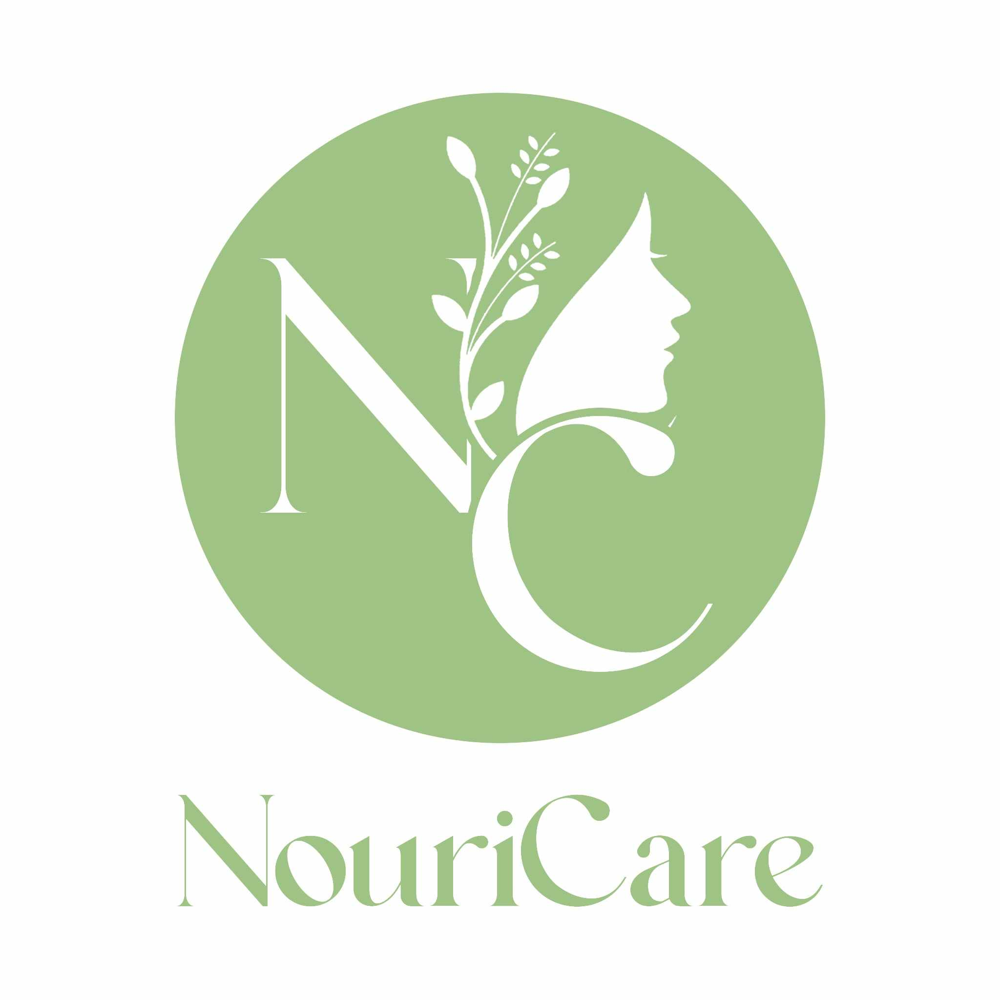
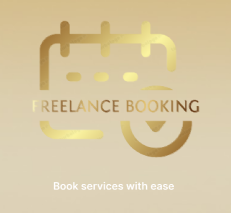
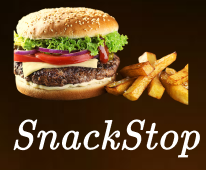
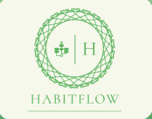
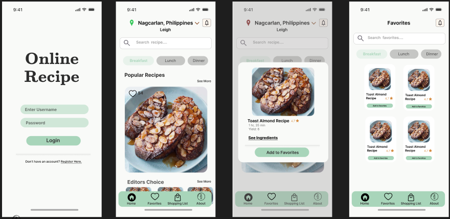

My Projects

Nouricare
Fully functional beauty & hygiene e-commerce system with checkout and user interaction features.
View Project
Freelance Booking App Design
This UI/UX project explores the user journey for discovering, scheduling, and managing freelance services. The goal was to create a high-contrast, accessible interface that feels both sophisticated and functional.
View Project
SnackStop
SnackStop is a user-centric food delivery application that streamlines the process of ordering local snacks and meals. The interface focuses on localized content, such as "Buy 1 Take 1" promos and popular payment integrations like GCash, making it highly relevant for Filipino consumers.
View Project
HabitFlow – Personalized Habit Tracking MVP
HabitFlow is an intuitive mobile application designed to help users build and maintain positive daily routines through a simplified, high-visibility interface. This Minimum Viable Product (MVP) focuses on the core user journey: from structured habit creation to daily progress monitoring.
View Project
BizTrack – Small Business Management Dashboard
BizTrack is a comprehensive web-based administrative platform designed to empower small business owners with real-time data visualization and streamlined operational management. This dashboard focuses on centralizing essential business functions into a single, intuitive interface.
View Project
Online Recipe
Online Recipe is a clean, minimalist mobile application designed to simplify home cooking by providing users with a curated database of recipes and meal-planning tools. The interface prioritizes high-quality food photography and effortless navigation to inspire users in the kitchen.
View Project